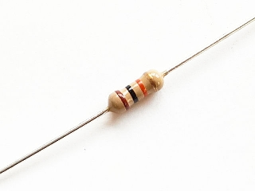

<!doctype html>
<html lang="ja">

	<head>
		<meta charset="utf-8">

		<title>raspberry piのススメ</title>

		<meta name="description" content="A framework for easily creating beautiful presentations using HTML">
		<meta name="author" content="Hakim El Hattab">

		<meta name="apple-mobile-web-app-capable" content="yes" />
		<meta name="apple-mobile-web-app-status-bar-style" content="black-translucent" />

		<meta name="viewport" content="width=device-width, initial-scale=1.0, maximum-scale=1.0, user-scalable=no">

		<link rel="stylesheet" href="css/reveal.css">
		<link rel="stylesheet" href="css/theme/sky.css" id="theme">

		<!-- For syntax highlighting -->
		<link rel="stylesheet" href="lib/css/zenburn.css">

		<!-- If the query includes 'print-pdf', include the PDF print sheet -->
		<script>
			if( window.location.search.match( /print-pdf/gi ) ) {
				var link = document.createElement( 'link' );
				link.rel = 'stylesheet';
				link.type = 'text/css';
				link.href = 'css/print/pdf.css';
				document.getElementsByTagName( 'head' )[0].appendChild( link );
			}
		</script>

		<!--[if lt IE 9]>
		<script src="lib/js/html5shiv.js"></script>
		<![endif]-->
	</head>

	<body>

		<div class="reveal">

			<!-- Any section element inside of this container is displayed as a slide -->
			<div class="slides">
        <section data-markdown
            data-separator="\n---\n$"
            data-vertical="\n--\n">
            <script type="text/template">

#Raspberry Piで遊んでみた


---

#目次
1. Raspberry Piとは？
2. Raspberry Piのセットアップ
3. Lチカ
4. しゃべらせてみる
5. Webインターフェース付きパトライトを作る
<hr>
6. チャット
7. シリアル通信でフルカラーLEDをたくさん光らせる
8. ケースを作ろう
8. まとめ

---

#Raspberry Piとは？

---

##Raspberry Piとは？


- ラズベリーパイ財団によって英国で開発されたARMプロセッサを搭載したシングルボードコンピュータ
- 2012年2月にModelA($25)とModelB($35)発売。
- 2014年6月にModelB+($35)発売。
- 2014年11月にModelA+($20)発売。

---

## Model B+の仕様
<div style="overflow: hidden;">
<div style="width:25%;float:left;">

</div>

<div style="width:75%;float:right;">
<ul>
<li>SoC:Broadcom BCM2835（CPU, GPU, DSP, SDRAM内蔵）</li>
<li>CPU:700 MHz / ARM1176JZF-S コア（ARM11ファミリ）</li>
<li>GPU:Broadcom VideoCore IV,OpenGL ES 2.0, 1080p 30fps H.264/MPEG-4 AVC high-profile デコーダー</li>
<li>メモリ（SDRAM）:512MB</li>
<li>USB 2.0 ポート:4（統合USBハブ）</li>
<li>映像出力:HDMI（rev1.3&1.4）, コンポジットビデオ（3.5mm4極ジャック）</li>
<li>音声出力:HDMI, 3.5mm4極ジャック</li>
<ul>
</div>
</div>

---

## Model B+の仕様
<div style="overflow: hidden;">
<div style="width:25%;float:left;">

</div>

<div style="width:75%;float:right;font-size:100%;">
<ul>
<li>ストレージ:microSDメモリーカードスロット（SDIO対応）</li>
<li>ネットワーク:10/100Mbps イーサネット</li>
<li>低レベル周辺機器:27×GPIO, UART, I2C, SPIと2つのチップセレクト, +3.3V, +5V, GND</li>
<li>カメラコネクタ:15ピン MIPIカメラシリアルインターフェース（CSI-2）コネクタ搭載</li>
<li>ディスプレイコネクタ:Display Serial Interface（DSI）15ピンフラットケーブルコネクタ</li>
<li>電源ソース:5V / USB Micro-Bコネクタ または GPIOコネクタ</li>
<li>大きさ:85mm × 56mm</li>
<li>OS:Debian, Fedora, Arch Linux</li>
<ul>
</div>
</div>

---

#Raspberry Piの<br>セットアップ

---

##必要なもの
<div style="overflow: hidden;">
<div style="width:25%;float:left;">

</div>

<div style="width:75%;float:right;">
<ul>
  <li>Raspberry Pi Model B+</li>
  <ul>
    <li>正規代理店のRSコンポーネンツ株式会社のオンラインショップで注文。送料込みで約4800円。</li>
  </ul>
</ul>
</div>
</div>

<div style="overflow: hidden;">
<div style="width:25%;float:left;">

</div>

<div style="width:75%;float:right;">
<ul>
  <li>micro SDHCカード 16GB</li>
  <ul>
    <li>OSが入る容量で転送速度の速い(Class10)もの。相性もあるみたいなのでここでチェック＞http://elinux.org/RPi_SD_cards</li>
    <li>自分は容量と値段のコスパの良かったものをあきばお～で購入。800円。</li>
  </ul>
</ul>
</div>
</div>

---

##必要なもの
<div style="overflow: hidden;">
<div style="width:25%;float:left;">

</div>

<div style="width:75%;float:right;">
<ul>
  <li>USB無線LANアダプター</li>
  <ul>
    <li>バッファローのWLI-UC-GNM2(900円)をAmazonで購入。発熱が大きいので、百均でUSB延長ケーブルも購入。</li>
  </ul>
</ul>
</div>
</div>

<div style="overflow: hidden;">
<div style="width:25%;float:left;">
</div>

<div style="width:75%;float:right;">
<ul>
  <li>LANケーブル、HDMI端子付きディスプレイ、USBキーボードとマウス</li>
  <ul>
    <li>無線LANのセットアップ完了まで必要。完了後はsshクライアントからアクセス。</li>
  </ul>

  <li>micro USBケーブル、USB電源アダプタ</li>
  <ul>
    <li>余り物を流用。5V 1A以上のもの。</li>
  </ul>
</ul>
</div>
</div>

---

##セットアップ手順
- micro SDカードにOSのイメージを書き込み
  - [公式サイト](http://www.raspberrypi.org/downloads/)からRASPBIANをダウンロードして"2014-09-09-wheezy-raspbian.img"を解凍
  - [Win32 Disk Imager](http://sourceforge.jp/projects/sfnet_win32diskimager/)を起動してimgファイルを選択し、書き込みDeviceが正しいことを確認してWrite
- micro SDカードをRaspberry Piに差して起動してセットアップ

```
raspi-configメニューが表示。あとで sudo raspi-config で起動可能。
1. Expand Filesystem
  > Root partition has been resized. > OK
4. Internationalization Options
  > I1 Change Locale > en_GB.UTF-8 をスペースキーで解除し，
    en_US.UTF-8 ja_jP.UTF-8を選択 > default local:en_US.UTF-8
  > I2 Change Timezone > Asia > Tokyo
  > I3 Change Keyboard Layout > Generic 101-key PC > Other
    > Japanese > Japanese > The default for the keyboard layout
    > No compose key > Use Control+Alt+Backspace to terminate the X server?:Yes
8. Advanced Options
  > A1 Overscan > Disable
finishすると自動的にreboot

username:pi
password:raspberry
```

---

##USB無線LANの設定
- USB無線LANアダプタを差すと自動認識される。確認コマンド↓

```
$ sudo lsusb
```

- Wifi設定

```
$ sudo bash
# cd /etc/wpa_supplicant
# wpa_passphrase ESSID PASSWORD >> wpa_supplicant.conf
# vi /etc/wpa_supplicant/wpa_supplicant.conf
ctrl_interface=DIR=/var/run/wpa_supplicant GROUP=netdev
update_config=1
network={
        scan_ssid=1
        ssid="ssid"
        psk=hogehogehoge
        proto=RSN
        key_mgmt=WPA-PSK
        pairwise=CCMP
        auth_alg=OPEN
}
```

---

##USB無線LANの設定
- ネットワーク設定

```
$ sudo vi /etc/network/interfaces
auto lo

iface lo inet loopback
iface eth0 inet dhcp

auto wlan0
allow-hotplug wlan0
#iface wlan0 inet manual
iface wlan0 inet dhcp
#iface wlan0 inet static
#  address 192.168.10.10
#  netmask 255.255.255.0
#  gateway 192.168.10.1
#wpa-roam /etc/wpa_supplicant/wpa_supplicant.conf
wpa-conf /etc/wpa_supplicant/wpa_supplicant.conf
iface default inet dhcp
```

```
$ sudo ifdown wlan0
$ sudo ifup wlan0
$ ping google.com
```

---

##ホスト名でアクセスできるようにする
```
$ sudo vi /etc/hostname
raspberrypiaplus
$ sudo vi /etc/hosts
127.0.1.1 raspberrypiaplus
```

```
$ sudo apt-get update
$ sudo apt-get install avahi-daemon
```

- Bonjourのインストール (Windowsのみ)
  - PCからavahiが設定されたRaspberryPiにアクセスするためには、PC側にもavahiかBonjourがインストールされている必要あり。
  - Linuxでは、RaspberryPiと同様に avahi-daemonをインストール。
  - MacはデフォルトでBonjourがインストール済み。
  - WindowsではデフォルトではBonjourはインストールされていない。最も簡単にBonjourを導入するには iTunes をインストールする。

---

##その他の設定
- アップグレード

```
$ sudo apt-get upgrade
```

- 再起動

```
$ sudo reboot
```

- シャットダウン

```
$ sudo halt
```

---

#Lチカ

---

##必要なもの
<table>
<tr>
<td style="width:25%;"></td>
<td style="width:75%;">高輝度赤色LED。10個150円</td>
</tr>
<tr>
<td style="width:25%;"></td>
<td style="width:75%;">ブレッドボード。200円</td>
</tr>
<table>

---

##必要なもの
<table>
<tr>
<td style="width:25%;"></td>
<td style="width:75%;">ブレッドボード用ジャンパーコード。10本300円</td>
</tr>
<tr>
<td style="width:25%;"></td>
<td style="width:75%;">抵抗。100本100円</td>
</tr>
<table>

---

##LEDをとりあえず光らせてみる


- LEDのアノード(足の長い方)を3.3Vの1番ピンに、カソードをGNDの14番ピンにつなぎ、間に330Ωの抵抗を入れておく
```
R = V/I
  = (3.3 - 1.85)/0.0044 = 330
# 1.85V LEDが光るのに必要な電圧
# 0.0044A LEDに流せる最大電流は20mA。1つのGPIOピンの最大電流は16mA。
#  余裕を持って4.4mA流すとする。
```


---

##シェルスクリプトを使う
- LEDのアノードをGPIO8の24番ピンに、カソードをGNDにつなぐ

###LEDを点ける
```
# GPIO8を使う宣言。
# /sys/class/gpio/ディレクトリにGPIO8ピン制御に必要な仮想ファイルが生成
$ sudo echo "8" > /sys/class/gpio/export

# 出力モードにする
$ sudo echo "out" > /sys/class/gpio/gpio8/direction

# GPIO8をハイにする
$ sudo echo "1" > /sys/class/gpio/gpio8/value
```

###LEDを消す
```
# GPIO8をローにする
$ sudo echo "0" > /sys/class/gpio/gpio8/value
```

---

##Wiring Piライブラリを使う
- インストール

```
$ git clone git://git.drogon.net/wiringPi
$ cd wiringPi
$ ./build
$ gpio -v
```

- GPIOピンの状態確認

```
$ gpio readall

```

- GPIOコマンド

```
$ gpio -g mode 17 out  # GPIO 17をoutputにする
$ gpio -g write 17 1   # GPIO 17のHIGHにする
$ gpio -g write 17 0   # GPIO 17をLOWにする
```

---

## wiringpi2 gemを使ってrubyで光らせる

```
$ sudo gem install wiringpi2
```


---

---
---

#しゃべらせてみる

---

##必要なもの
- アンプ付きスピーカー（一番簡単）
  - 電源は電池式またはUSBから

---

##とりあえず音を鳴らす
- スピーカーつなぐ
- 音声出力をスピーカーにする(デフォルトはHDMI)
- 音声ファイルをコマンドで鳴らす


---

##合成音声ソフトのインストール
```
$ wget http://downloads.sourceforge.net/project/mmdagent/MMDAgent_Example/MMDAgent_Example-1.3/MMDAgent_Example-1.3.zip
$ unzip MMDAgent_Example-1.3.zip
$ sudo cp -R MMDAgent_Example-1.3/Voice/* /usr/share/hts-voice/
```

---

##音声合成APIを使ってみる


---

#Webインターフェース付きパトライトを作る

---

##必要なもの
- LEDランタン
- フルカラーLED


---

#ケースを自作する

---

##必要なもの
- アイロンビーズ
- アイロンビーズボード
- ピンセット
- アイロン
- アイロンペーパー

---

```
ここにファミコンがあるじゃろ？

 ( ＾ω＾)
 ⊃ファミコン⊂

 これをディスクシステムと合わせて…

 ( ＾ω＾)
 ≡⊃⊂≡

 ( ＾ω＾)
 ⊃ツインファミコン⊂

 出来上がりじゃ…
```

---

#Special Thanks
## github
- ソース置き場
  - 自宅のWindowsデスクトップまたはMacbookで開発→Raspberry Piでgit pull
- 静的ページ置き場
  - gh-pagesブランチを作ると勝手にhttp://account-name.github.io/project-nameにページができる

---

## reveal.js
- このスライドのテンプレート
- Markdown形式でいい感じに書ける

```
## reveal.js
- このスライドのテンプレート
- Markdown形式でいい感じに書ける

```

---

##fritzing
- オープンソースの電子回路図作成ツール
- http://fritzing.org/home/


---

##電子部品屋
- 秋月電子通商
- 千石電商


---
---

#おしまい
            </script>
        </sectin>

			</div>

		</div>

		<script src="lib/js/head.min.js"></script>
		<script src="js/reveal.min.js"></script>

		<script>

			// Full list of configuration options available here:
			// https://github.com/hakimel/reveal.js#configuration
			Reveal.initialize({
        width: 1200,
        height: 1000,
				controls: true,
				progress: true,
				history: true,
				center: true,

				theme: Reveal.getQueryHash().theme, // available themes are in /css/theme
				transition: Reveal.getQueryHash().transition || 'default', // default/cube/page/concave/zoom/linear/fade/none

				// Parallax scrolling
				// parallaxBackgroundImage: 'https://s3.amazonaws.com/hakim-static/reveal-js/reveal-parallax-1.jpg',
				// parallaxBackgroundSize: '2100px 900px',

				// Optional libraries used to extend on reveal.js
				dependencies: [
					{ src: 'lib/js/classList.js', condition: function() { return !document.body.classList; } },
					{ src: 'plugin/markdown/marked.js', condition: function() { return !!document.querySelector( '[data-markdown]' ); } },
					{ src: 'plugin/markdown/markdown.js', condition: function() { return !!document.querySelector( '[data-markdown]' ); } },
					{ src: 'plugin/highlight/highlight.js', async: true, callback: function() { hljs.initHighlightingOnLoad(); } },
					{ src: 'plugin/zoom-js/zoom.js', async: true, condition: function() { return !!document.body.classList; } },
					{ src: 'plugin/notes/notes.js', async: true, condition: function() { return !!document.body.classList; } }
				]
			});

		</script>

	</body>
</html>
